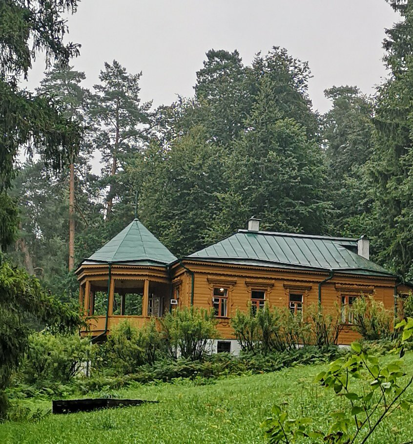
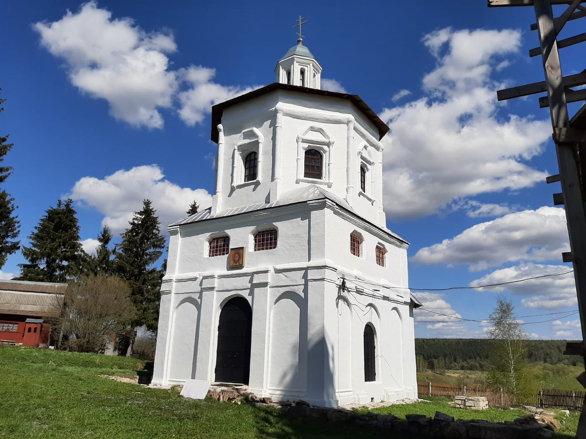

Сканди-мероприятия
-
SCANDI-прогулка + экскурсия в Музей Пришвина
14 октября в 8:45
Всего в 30 км от Москвы, под Звенигородом, на живописном берегу Москвы-реки, уютно примостился музей Михаила Пришвина. Что вы знаете об этом человеке? Писатель, скажете вы. Писал про природу. Но личность эта была гораздо многограннее и интереснее, чем вы привыкли думать.
Дом этот с небольшим участком Пришвин купил после войны, в мае 1946 года, и до последнего года своей жизни старался приехать в Дунино и провести здесь как можно больше времени, с апреля-мая и до глубокой осени.
За время прогулки мы пройдем по полям, лесам и вдоль реки. Все, как любил писатель. Сделаем упражнения на технику шага и дыхательные упражнения, позанимаемся суставной и нейрогимнастикой. Обязательно походим и полюбуемся осенней природой. Посетим с экскурсией мемориальный дом и усадьбу Михаила Пришвина. А после экскурсии пройдем по Пришвинской тропе вверх по течению Москвы-реки вдоль археологического комплекса до источника Иоанна Предтечи, где желающие смогут окунуться в ледяную целебную воду. Тропинка поведет нас по живописному берегу реки – это любимые, исхоженные писателем места, которые мы можем видеть на его фотоснимках, и о которых читаем в его Дунинском дневнике.
Протяженность маршрута: около 13 км
Продолжительность: 6-7 ч
Инструктор: Краснова Елена
Цена: 2100р (полная), 2050р (льготная)
Предоплата (входные билеты в музей + экскурсия):
500 р (полная), 450 р (льготная). При себе необходимо иметь документ, подтверждающий льготу.
Включено все спортивно-экскурсионное сопровождение. Окончательная запись в группу после предоплаты.
Дорога к месту старта и после окончания маршрута оплачивается самостоятельно.
После регистрации вы получите информационное письмо с инструкцией по внесению предоплаты, а затем с подробной информацией по времени и месту встречи.
До встречи на тропе!
ЗаписатьсяПодробнее -
АВТОБУСНО-ПЕШЕХОДНОЕ путешествие "Золотое кольцо Каширы"
21 октября 2023г
Золотое кольцо Каширы - венок усадеб и храмов, расположенных в окрестностях этого славного города.
Мы увидим:
✅Усадьбу Молоди, бывшее владение Соковниных(о них особый рассказ), Головиных и Салтыковых, сохранился необычный храм с усыпальницей, руины главного дома, флигеля. В селе есть памятный знак битвы при Молодых 1572г. Рассказ о ней будет, обязательно.
✅Село Старая Ситня, церковь Рождества Божьей Матери 1767г. Храмоздатель И.А. Татищев.
✅Село Бортниково, владение героя обороны Смоленска 1609-1611гг М.Б. Шеина, церковь Преображения.
✅Чиркино, вотчина Шереметьевых, первый владелец Андрей Шеремет. Храмы 16 и 17 веков, самый первый, возможно, строили заезжие итальянцы.
✅ Усадьба Троице-Лобаново, владельцы Годуновы, Шереметьевы, Азанчевские. Храм 16 века, остатки усадьбы и целый ворох исторических личностей, которые были в здешних местах. Начиная с самого Дмитрия Донского.
✅Авдотьино, "масонское гнездо", владение Н.И. Новикова, поэта, просветителя 18 века, здесь его дом и могила в Тихвинской церкви. Сохранились руины флигелей и крестьянские дома 18 века, строил их, конечно, Н.И. Новиков на свои, кровные. Поездка долгая, но очень интересная. Красивые места, живая история, хорошее настроение, пикник на лоне природы и скандинавская ходьба.
Старт в 9.00 у метро Домодедовская. Окончание в 19.00 также у метро Домодедовская. Едем на арендованном автобусе с путевой информацией экскурсовода. На маршруте остановки и пешеходные прогулки. Скандинавские палки берём обязательно.
Экскурсовод: Василий Злотников
Инструктор: Волосюк Маргарита
ВНИМАНИЕ‼️ Маршрут интересный и длительный, но точек для обеда на пути нет, поэтому пикник на природе, сухпай и термосы берем с собой. От организатора также будут пироги для чаепития.
В стоимость входит : все экскурсионно-спортивное сопровождение, трансфер от точки старта по всему экскурсионному маршруту, чаепитие, использование аудиогидов.
Стоимость: 4700р
ЗаписатьсяПодробнее -
SCANDI-поход + экскурсия "Дорога в Лавру", часть 7
28 октября 2023г
Сергий Радонежский – один из самых почитаемых святых на Руси. А с конца XIV в., основанный им, Троицкий монастырь стал центром притяжения. Совершать паломничество в Троицкую обитель стало традицией, как у простого люда, так и у знатного. Причем проделать путь до монастыря надо было обязательно пешком
Мы увидим:
Мы разделили дорогу на несколько этапов. На этот раз пойде очередной, седьмой, отрезок пути из Москвы в Троице-Сергиеву Лавру.
Этап за этапом, мы проходим маршрут длиною в 120 км. В этот раз маршрут около 12 км.
Пойдем от ст.Хотьково до городища Радонеж.
В Хотьково заглянем в Покровский Хотьков монастырь, а потом позавтракаем в Доме урядника с чаем из самовара, сушками, баранками, монастырскими пирогами и интересными рассказами про историю этих мест, про местных жителей и известных художников, снимавших здесь жилье. А после завтрака пройдем по старинному дому с экскурсией.
И затем наш путь будет лежать по полям, по лесам, вдоль живописной речки Пажи к городищу Радонеж.
Там мы полюбуемся долиной речки Пажи, желающие смогут набрать воды из Святого источника и окунуться в купели. Потом мы пообедаем. А затем отправимся дальше, чтобы пройти по окрестным просторам вокруг небольшого озера. Приблизительно через час вернёмся обратно в Радонеж и уедем на автобусе до ст. Хотьково, а оттуда в Москву.
Маршрут живописный, интересный и совсем несложный.
Во время прогулки сделаем разминку, суставную, дыхательную и нейрогимнастику, упражнения на различные группы мышц и технику скандинавского шага, в завершении обязательная растяжка.
Одежда удобная, спортивная по погоде, головной убор, сидушка, перекус, питье, репеллент, дождевик.
И самое главное – обязательно возьмите с собой хорошее настроение!
Идем в субботу, 28 октября 2023г.. Начало в 9:15 на ст.Хотьково
Протяженность всего маршрута: ок.12 км.
Продолжительность: весь день (от 7 часов)
Самостоятельно оплачивается проезд, обед в Радонеже.
Окончательная запись в группу после предоплаты 1000 р
Инструктор: Краснова Елена После регистрации Вы получите информационное письмо с подробной информацией по внесению предоплаты, а также времени и месту встречи.Включено: спортивно-экскурсионное сопровождение
Стоимость: 2500р
Записаться Подробнее
Подробнее